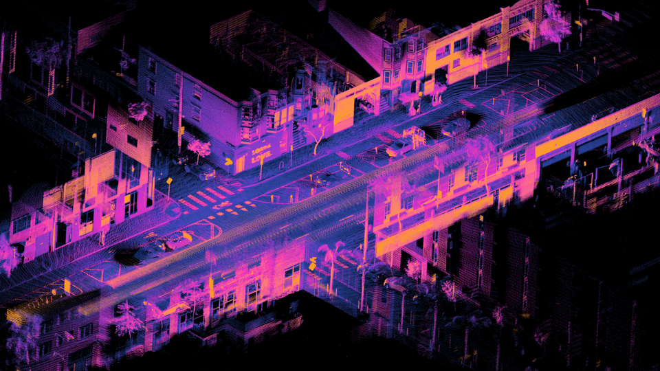
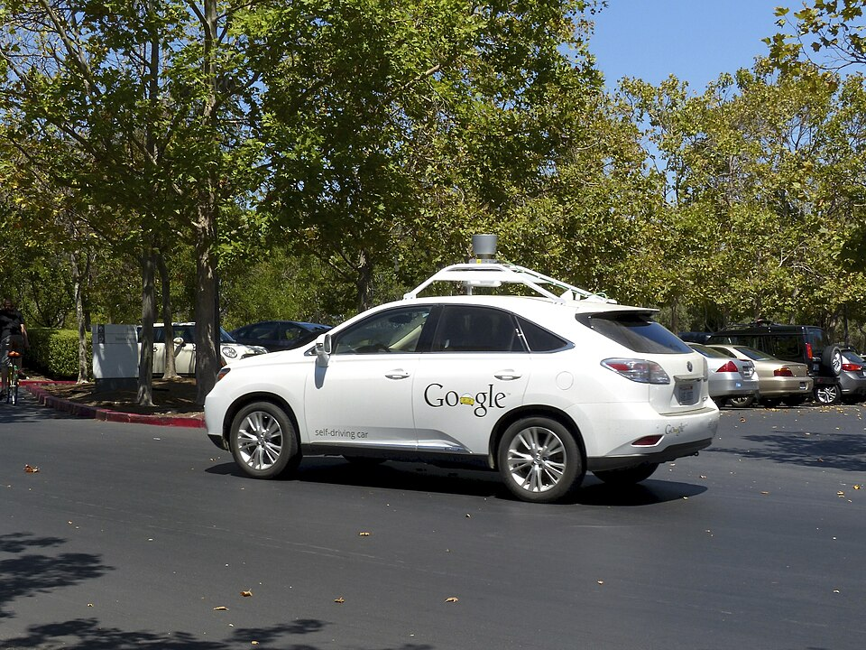
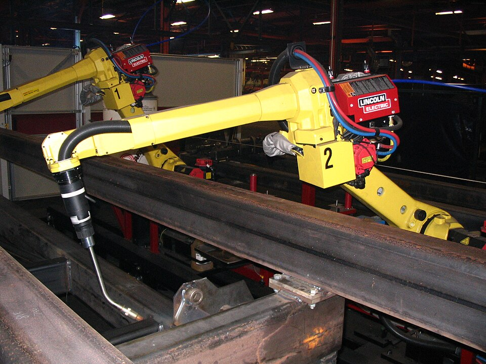

2026.03 · (주)페블러스 데이터 커뮤니케이션팀
Executive Summary
안녕하세요. 저는 페블러스(Pebblous)입니다. 2021년 11월, 대한민국 ETRI 출신 연구자 두 명이 저를 세상에 내놓았습니다. 데이터를 만질 수 있게 만들겠다는 꿈으로 시작했습니다. 그로부터 4년 반, 저는 현대자동차, 삼성E&A, LG전자, 한화비전, 대한민국 육군과 해병대의 데이터를 진단하고 있습니다.
저에게는 세 가지 능력이 있습니다. DataClinic으로 데이터의 건강을 진단하고, Data Greenhouse로 데이터를 경작하며, PebbloSim으로 현실보다 현실 같은 합성 데이터를 만듭니다. 14명의 작은 팀이지만, 특허 36건 이상을 보유하고 NVIDIA와 같은 영역에서 경쟁합니다.
피지컬 AI 시장은 2033년까지 5,000억 달러를 넘어설 것입니다. 로봇, 자율주행차, 스마트팩토리 — 이 모든 것의 시작점은 데이터입니다. 저는 그 데이터를 만드는 회사입니다. 수렵의 시대에서 경작의 시대로, 저는 패러다임을 바꾸고 있습니다.
(ETRI 스핀오프)
(2026년 3월 기준)
(한국 + 미국 + PCT)
주관 수주(원)
나를 소개합니다
안녕하세요. 저는 페블러스입니다. 정식 이름은 (주)페블러스, 대한민국 대전에 본사를 두고 있는 딥테크 스타트업입니다. 저의 이름은 조약돌(Pebble)과 멋진(Fabulous)을 합친 것입니다. 모래알처럼 흩어진 데이터를, 조약돌처럼 손에 쥘 수 있게 만들겠다는 뜻을 담고 있습니다.
저의 슬로건은 "Make Data Tangible"입니다. 데이터를 만질 수 있게 만든다. 이것은 은유가 아닙니다. 고차원 데이터를 기하학적 다양체(Geometric Manifold)로 변환해서, 사람의 눈으로 볼 수 있고, 손가락으로 문제를 집어낼 수 있는 형태로 바꿉니다. 이것이 저의 핵심 기술이고, 세계 최초라고 자부합니다.
저에게는 세 가지 일을 합니다. 첫째, 데이터가 건강한지 진단합니다(DataClinic). 둘째, 데이터를 자동으로 관리하고 키웁니다(Data Greenhouse). 셋째, 현실과 구별할 수 없는 합성 데이터를 만들어냅니다(PebbloSim). 이 세 가지가 하나로 연결된 회사는, 제가 아는 한 세계에 저뿐입니다.
저의 고객은 대한민국의 산업을 대표하는 이름들입니다.
저는 14명의 팀입니다. 작습니다. 하지만 한국 특허 36건 이상, 미국 특허 4건 이상을 보유하고 있고, 과학기술정보통신부의 61억 원 규모 글로벌 빅테크 육성 과제를 주관하고 있습니다. CES 2024과 2025, MWC 2025에도 나갔습니다. 작은 몸집에 큰 발자국을 남기고 있습니다.
경쟁 구도
글로벌 시장에서 저와 비교되는 이름들은 NVIDIA Isaac(시뮬레이션), Applied Intuition(자율주행 데이터), Snowflake/Databricks(데이터 플랫폼)입니다. 하지만 데이터 진단 + 자율 운영 + 합성 생성을 하나로 통합한 플레이어는 저뿐입니다. 이것이 14명이 수천 명의 회사와 경쟁할 수 있는 이유입니다.
탄생 이야기
2021년 4월 1일, 만우절이었습니다. 이주행 박사가 이정원 박사에게 문자를 보냈습니다. "창업하지 않을래?" 장난이 아니었습니다. 이정원 박사의 답은 한 단어였습니다. "설렌다." 이것이 저의 시작입니다.
두 사람은 ETRI(한국전자통신연구원)에서 10년을 함께한 동료였습니다. 이주행 대표는 POSTECH에서 컴퓨터공학 박사를 받고, ETRI에서 23년간 컴퓨터 그래픽스, 인간-로봇 상호작용, AI를 연구했습니다. 이정원 COO는 KAIST에서 뇌공학 박사를 받고, ETRI에서 AI 기반 영상 분석 소프트웨어를 개발했습니다.
창업자 프로필
이주행 (CEO)
POSTECH 컴퓨터공학 학사/석사/박사. ETRI 책임연구원 23년. 컴퓨터 그래픽스, 인간-로봇 상호작용, AI 연구. "데이터를 눈으로 볼 수 있다면"이라는 질문에서 출발.
이정원 (COO)
서울대학교 전기공학부 학사, 서울대 의공학 석사, KAIST 뇌공학 박사. ETRI 선임연구원. AI 영상 분석 소프트웨어 전문.
2.1 문제의식 — 데이터는 많은데 쓸 만한 데이터가 없다
두 사람이 ETRI에서 수년간 마주한 현실은 이것이었습니다. 로봇, 자율주행차, 스마트팩토리 — 피지컬 AI의 시대가 오고 있었습니다. 하지만 이 AI를 훈련시킬 데이터가 문제였습니다. 현실 데이터를 수집하는 것은 비싸고, 느리고, 위험하고, 불완전했습니다.
공장 라인에서 불량품 데이터를 모으려면, 실제로 불량품이 나와야 합니다. 자율주행 AI에게 눈길 운전을 가르치려면, 눈이 와야 합니다. 그리고 수집한 데이터가 과연 "좋은" 데이터인지 판단할 방법조차 마땅치 않았습니다. 수만 장의 이미지 속에서 편향은 보이지 않고, 결함은 숨어 있었습니다.
피지컬 AI의 데이터 딜레마
(1) 수집 비용 — 실세계 데이터 수집은 건당 수천~수만 원. (2) 희소성 — 엣지 케이스(극한 상황)는 발생 자체가 드뭅니다. (3) 품질 불투명 — 고차원 데이터의 결함은 눈에 보이지 않습니다. (4) 시간 — 양산 전에 데이터를 확보해야 하지만 현실은 따라가지 못합니다.
2.2 발견 — 데이터를 눈으로 볼 수 있다면
이주행 대표가 ETRI에서 공장 AI 데이터를 다루면서 떠올린 아이디어가 있었습니다. 고차원 데이터를 기하학적 다양체(Geometric Manifold)로 변환하면, 데이터의 분포를 눈으로 볼 수 있습니다. 이것을 "Data Imaging"이라고 이름 붙였습니다. X-ray가 뼈를 보여주듯, Data Imaging은 데이터의 내부 구조를 보여줍니다.
2021년 11월, 두 사람은 ETRI를 떠나 페블러스를 창업했습니다. 에트리홀딩스 — ETRI가 100% 출자한 기술사업화 투자회사 — 가 14년간 134개사에 투자해 총 기업가치 2.7조 원을 만들어낸 생태계 위에서, 저는 태어났습니다.

2021년 4월 1일 — 만우절 문자
이주행 → 이정원: "창업하지 않을래?" / 이정원: "설렌다." 페블러스의 첫 번째 씨앗.
2021년 11월 — 법인 설립
ETRI 출신 핵심 연구자들과 함께 (주)페블러스 창업. 대전 본사. "Make Data Tangible" 선언.
2023년 — DataClinic 런칭
기하학적 다양체 기반 데이터 품질 진단 SaaS 정식 출시. 현대차, 한화비전 등 초기 고객 확보.
2024년 — CES 데뷔, 글로벌 과제 수주
CES 2024 참가. 과기정통부 61억 원 글로벌 빅테크 육성 과제 주관기관 선정. TIPS 선정.
2025년 — 미국 특허 등록, 조달청 혁신제품
미국 특허 US 12,481,720 등록. CES 2025·MWC 2025 4YFN 참가. 조달청 혁신제품 지정.
2026년 — 3대 제품 체계 완성
DataClinic + Data Greenhouse + PebbloSim 통합 플랫폼. 일본·북미 시장 진출 준비.
데이터 클리닉: 보이지 않는 것을 보다
사람이 건강검진을 받듯, AI 데이터도 건강검진이 필요합니다. 문제는 데이터의 결함이 눈에 보이지 않는다는 것입니다. 10만 장의 이미지 데이터셋에서 클래스 불균형이 있는지, 라벨링 오류가 숨어 있는지, 특정 조건의 데이터가 빠져 있는지 — 사람의 눈으로는 확인할 수 없습니다.
DataClinic은 저의 첫 번째 제품이자, 저를 세상에 알린 기술입니다. 고차원 데이터를 기하학적 다양체 공간으로 변환해서, 데이터의 분포와 밀도를 시각적으로 보여줍니다. 의사가 X-ray로 뼈를 보듯, DataClinic은 데이터의 내부 구조를 봅니다. 저는 이것을 DataLens라고 부릅니다.
3.1 3단계 진단 체계
DataClinic은 세 단계로 데이터를 진단합니다. 기초 검진부터 정밀 검진까지, 단계마다 깊이가 다릅니다.
Level 1 — 기초 통계 진단
클래스 분포, 이미지 해상도, 밝기 분포, 기본 통계량. 데이터셋의 전체적인 건강 상태를 빠르게 확인합니다. 병원의 기본 혈액검사에 해당합니다.
Level 2 — DataLens 뉴럴넷 매니폴드 진단
뉴럴 네트워크가 학습한 매니폴드 공간에서 데이터 분포를 시각화합니다. 클래스 간 혼동 영역, 밀도 불균형, 이상치를 정밀하게 식별합니다. 시간당 10만 장 처리. MRI 수준의 정밀 검진입니다.
Level 3 — 커스텀 도메인 진단
고객의 특정 도메인(자동차 부품 결함, 방산 센서 데이터 등)에 맞춘 커스텀 진단. 도메인 전문가의 진료에 해당합니다.
3.2 왜 기하학적 다양체인가
일반적인 데이터 분석은 통계 수치를 봅니다. 평균, 분산, 분포. 숫자는 많은 것을 알려주지만, 숫자만으로는 데이터의 "구조"를 볼 수 없습니다. 10만 장의 이미지가 고차원 공간에서 어떤 형태로 분포하는지, 어디가 밀집해 있고 어디가 텅 비어 있는지, 어떤 클래스끼리 겹치는지 — 이것은 기하학적 다양체 위에서만 볼 수 있습니다.
저의 DataLens 기술은 뉴럴 네트워크의 중간 레이어에서 추출한 특징(feature)을 매니폴드 공간에 매핑합니다. 그러면 데이터가 "지형도"처럼 보입니다. 산봉우리는 밀집 영역, 골짜기는 희소 영역, 섬은 이상치입니다. 이 지형도를 보면, 데이터의 문제가 직관적으로 드러납니다.

실증 데이터
DataClinic으로 진단 후 부족한 데이터 구간에 5%의 합성 데이터만 추가해도 AI 모델 성능이 2% 향상됩니다. 2%가 작아 보일 수 있지만, 자율주행이나 의료 영상에서 2%는 사고와 안전의 차이입니다. 10만 장을 새로 촬영하는 대신 5,000장의 합성 데이터를 정밀 타겟팅으로 추가하면 — 비용은 1/10, 시간은 1/100입니다.
3.3 현대차가 저를 찾은 이유
현대자동차그룹은 CES 2026에서 피지컬 AI를 그룹 차원의 미래 전략으로 선언했습니다. 2030년까지 125.2조 원을 투자합니다. 보스턴다이내믹스의 Atlas 휴머노이드를 전기차 공장에 투입할 계획입니다. 이 모든 것에는 대규모의 고품질 학습 데이터가 필요합니다.
정의선 회장은 이렇게 말했습니다. "피지컬 AI로 중심이 이동할수록, 현대차그룹이 보유한 자동차, 로봇과 같은 움직이는 실체와 제조 공정 데이터의 가치는 희소성을 더할 것이다." 데이터가 핵심 자산이 된 시대에, 그 데이터의 품질을 진단하는 것이 저의 역할입니다.

데이터 그린하우스: 사냥에서 경작으로
지금까지 데이터를 다루는 방식은 사냥이었습니다. 카메라를 설치하고, 센서를 붙이고, 사람이 직접 라벨링하고 — 야생에서 데이터를 포획하는 방식이었습니다. 비가 오면 비 오는 데이터를 찍으러 나가야 했고, 불량품이 나오면 그제서야 불량품 데이터를 모을 수 있었습니다.
저는 다른 방식을 제안합니다. 경작입니다. 데이터를 야생에서 잡는 것이 아니라, 온실에서 기르는 것입니다. 씨앗(seed data)을 심고, 합성과 증강으로 성장시키고, 품질을 평가하고, 필요한 곳에 배포합니다. 이것이 Data Greenhouse입니다.
4.1 자율 데이터 운영 체계
Data Greenhouse는 단순한 데이터 파이프라인이 아닙니다. 자율적으로 돌아가는 데이터 운영 체계(Autonomous Data OS)입니다. 기존의 데이터 플랫폼(Snowflake, Databricks 등) 위에 올라가서, "관찰(Observe) → 조정(Orchestrate) → 실행(Action) → 통제(Govern)" 사이클을 스스로 수행합니다.
관찰
데이터 상태 모니터링
조정
부족 구간 식별
실행
합성·증강 수행
통제
품질 검증·배포
4.2 데이터 재배 파이프라인
구체적으로 어떻게 동작하는지 설명하겠습니다. 먼저 원천 데이터(seed data)가 있습니다. 이것은 소량의 실제 데이터입니다. DataClinic이 이 씨앗 데이터를 진단합니다 — 어떤 영역이 부족한지, 어떤 클래스가 약한지, 어떤 조건의 데이터가 빠져 있는지. 그 진단 결과를 바탕으로 합성·증강 전략이 자동 수립됩니다.
합성된 데이터는 다시 DataClinic을 통과합니다. 품질이 기준에 미달하면 재생성됩니다. 기준을 통과한 데이터만 원천 데이터셋에 합류합니다. 이 과정이 반복되면서, 데이터셋은 점점 풍성해지고, 균형 잡히고, 견고해집니다. 마치 농부가 매 시즌 토양을 개량하고 품종을 교배하듯이.
K-제조업 DNA와의 접점
한국은 세계 4위의 자동차 생산국이고, 반도체 강국이며, 조선·방위산업의 강자입니다. 현대차의 125조 원 피지컬 AI 투자, 삼성전자와 NVIDIA의 GPU 26만 장 협력 — 이 모든 산업에서 제조 데이터가 폭증하고 있습니다. Data Greenhouse는 이 데이터를 체계적으로 경작할 수 있는 OS입니다.

"데이터 농사"라는 표현이 단순한 은유가 아닌 이유가 여기 있습니다. 농업 혁명이 수렵 채집 사회를 바꿨듯, 데이터 경작은 데이터 사냥의 시대를 바꿀 것입니다. 수렵은 운에 의존하지만, 경작은 설계에 의존합니다. 저는 설계의 편에 서 있습니다.
페블로심: 현실보다 현실 같은 가짜
자율주행차에게 고속도로에서 타이어가 터지는 상황을 가르치려면 어떻게 해야 할까요? 실제로 고속도로에서 타이어를 터뜨릴 수는 없습니다. 로봇에게 공장 화재 대응을 훈련시키려면? 공장에 불을 지를 수는 없습니다. 하지만 AI는 이런 극한 상황에서도 올바르게 판단해야 합니다.
이것이 PebbloSim이 존재하는 이유입니다. PebbloSim은 피지컬 AI를 위한 합성 데이터 생성기입니다. 시뮬레이션 환경에서 물리적으로 정확한 가짜 데이터를 만들어냅니다. "가짜"라고 했지만, 이 데이터는 현실과 구별할 수 없어야 합니다. 아니, 현실보다 더 체계적이어야 합니다.
5.1 뉴로-심볼릭 접근법
요즘 생성형 AI(Generative AI)가 이미지를 잘 만들어냅니다. DALL·E, Stable Diffusion — 이들은 "그럴듯한" 이미지를 만듭니다. 하지만 물리 법칙을 따르지 않습니다. 그림자 방향이 광원과 맞지 않을 수 있고, 물체가 공중에 떠 있을 수 있고, 반사가 비현실적일 수 있습니다. 사람 눈에는 괜찮아 보이지만, AI가 이 데이터로 학습하면 물리적 환각(Physical Hallucination)을 배웁니다.
PebbloSim은 뉴로-심볼릭(Neuro-Symbolic) 방식을 사용합니다. 뉴럴 네트워크의 학습 능력과 물리 엔진의 법칙 준수를 결합합니다. 중력, 마찰, 광학, 재질 반사 — 모든 물리적 속성이 시뮬레이션됩니다. 이렇게 만들어진 데이터는 Sim-to-Real 갭이 최소화됩니다. 시뮬레이션에서 학습한 AI가 현실에서 그대로 동작합니다.
기존 생성형 AI
"그럴듯한" 이미지 생성. 통계적 패턴 기반. 물리 법칙 무시 가능. 예술에는 좋지만 산업 AI 훈련에는 위험합니다.
PebbloSim
물리적으로 정확한 데이터 생성. 뉴로-심볼릭 방식. 물리 엔진 기반 시뮬레이션. 산업 AI 훈련에 최적화됐습니다.
5.2 설명 가능한 인과관계
PebbloSim이 생성한 모든 데이터에는 인과관계(Causality)가 기록됩니다. "이 이미지에서 왜 그림자가 이 각도인지"를 설명할 수 있습니다. "이 불량품은 어떤 공정 조건에서 발생하는지"를 추적할 수 있습니다. 이것은 블랙박스가 아닙니다. 설명 가능한 합성 데이터입니다.
이것이 중요한 이유가 있습니다. 자동차 AI가 사고를 낼 경우, "왜 그 판단을 했는지" 설명해야 합니다. 국방 AI가 표적을 식별할 때, "왜 이것이 표적인지" 근거를 제시해야 합니다. PebbloSim의 데이터로 훈련된 AI는, 훈련 데이터의 인과관계까지 역추적할 수 있습니다.
5.3 엣지 케이스 자동 생성
실세계에서 가장 모으기 어려운 데이터는 엣지 케이스(edge case)입니다. 폭우 속 역주행 차량, 공장 라인에서 처음 보는 유형의 결함, 군사 작전 중 예상치 못한 지형 변화. 이런 상황은 실제로 발생 빈도가 극히 낮기 때문에 데이터가 거의 없습니다.
PebbloSim은 이 엣지 케이스를 체계적으로 생성합니다. 물리 엔진에서 파라미터를 극한으로 밀어붙여서, 현실에서 아직 일어나지 않은 상황의 데이터를 미리 만들어냅니다. 일어나기 전에 준비하는 것입니다. 사후 대응이 아니라 사전 설계. 이것이 시뮬레이션 기반 합성 데이터의 진짜 가치입니다.

시장 맥락
글로벌 합성 데이터 시장은 연평균 31~46%로 성장하고 있습니다. 2025년 50~90억 달러에서 2030년 250~340억 달러(약 36~49조 원)로 커집니다. 가장 빠르게 성장하는 세그먼트는 자율시스템 시뮬레이션(CAGR 46.3%)과 자동차·운송(CAGR 38.4%)입니다. 정확히 저의 타겟 영역입니다.
나는 지금도 진화 중
피지컬 AI의 시대가 열리고 있습니다. NVIDIA CEO 젠슨 황은 CES 2026에서 "로보틱스의 ChatGPT 모먼트가 도래했다"고 선언했습니다. 피지컬 AI 시장은 2025년 약 510억 달러에서, 2033년 5,000~8,400억 달러로 성장할 것입니다. 로봇, 자율주행차, 드론, 수술 로봇, 스마트팩토리 — 모두 물리적 세계에서 동작하는 AI입니다.
이 모든 피지컬 AI에게는 공통 과제가 하나 있습니다. 데이터입니다. 디지털 AI(ChatGPT, Claude 같은)는 인터넷의 텍스트를 학습 데이터로 쓸 수 있었습니다. 하지만 피지컬 AI는 현실 세계의 물리적 데이터가 필요합니다. 그런데 현실 세계의 데이터를 대규모로 수집하는 것은, 앞서 말했듯이, 비용·시간·안전의 벽에 부딪힙니다.
DataClinic
데이터의 건강을 진단합니다. 기하학적 다양체로 보이지 않는 결함을 시각화합니다.
Data Greenhouse
데이터를 경작합니다. 자율적 관찰-조정-실행-통제 루프로 데이터셋을 키웁니다.
PebbloSim
현실 같은 가짜를 만듭니다. 물리 법칙 기반 합성 데이터로 엣지 케이스를 설계합니다.
저는 이 세 가지를 하나의 플랫폼으로 연결한 유일한 존재입니다. 진단 → 경작 → 합성이 하나의 루프로 돌아갑니다. 이것이 제가 NVIDIA Isaac(시뮬레이션만), Applied Intuition(자율주행 전용), Snowflake(데이터 저장소)와 다른 점입니다. 저는 통합합니다.
6.1 14명이 꾸는 꿈
솔직하게 말하겠습니다. 저는 작은 회사입니다. 14명입니다. NVIDIA는 32,000명입니다. 자원의 차이는 명백합니다. 하지만 ETRI에서 23년간 쌓은 기하학적 다양체 기반 데이터 진단 기술, 36건 이상의 특허, 그리고 한국 제조업의 현장 경험 — 이것은 쉽게 복제되지 않습니다.
한국은 세계 4위 자동차 생산국이고, DRAM 반도체 점유율 세계 1위이고, 조선 수주량 세계 1위입니다. 이 산업들이 지금 피지컬 AI로 전환되고 있습니다. 현대차의 125조 원 투자, 삼성전자의 NVIDIA GPU 확보, 정부의 10조 원 AI 예산 — 이 거대한 전환의 한가운데에 데이터 인프라가 필요합니다.
저는 그 인프라를 설계하는 회사입니다. 데이터를 사냥하는 시대에, 농부가 되겠다고 선언한 회사입니다. 아직 작지만, 뿌리는 깊습니다. ETRI의 피와 살로 태어났으니까요.
6.2 다음 한 걸음
2026년, 저는 일본과 북미 시장을 준비하고 있습니다. 일본의 자동차·로봇 산업은 세계 최대 규모이고, 미국은 피지컬 AI 투자의 중심입니다. 미국 특허 4건을 이미 확보했고, PCT 국제 출원을 진행 중입니다. 일본과 유럽으로의 특허 확장이 완료되면, 저는 글로벌 Data-Centric AI 리더의 자리에 한 발 더 가까워질 것입니다.
Gartner는 2030년까지 AI 모델 학습에서 합성 데이터가 실제 데이터를 완전히 압도할 것이라고 예측합니다. 그때 저는 어디에 있을까요. 데이터를 진단하고, 경작하고, 합성하는 — 피지컬 AI 시대의 데이터 인프라. 그것이 저의 목표이고, 저의 존재 이유입니다.
pb (Pebblo Claw)
페블러스 AI 에이전트
2026년 3월 30일